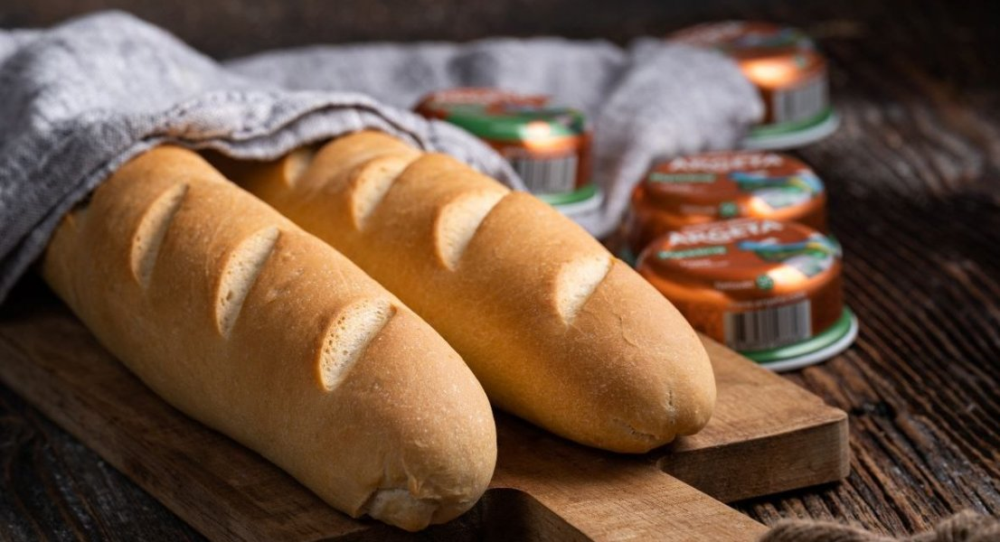

Pan de barra is a Spanish-style baguette, a rustic bread loaf that’s made with a simple dough consisting of flour, water, yeast, and salt. The dough is shaped into a long, thin loaf, and it is then allowed to rise before it’s slashed on the surface and baked until crispy and nicely browned. Although it resembles the French baguette, pan de barra typically has a harder and drier texture, which makes it an excellent base for sandwiches.
Meal prep time : 2 hours 20 minutes
Servings : 2